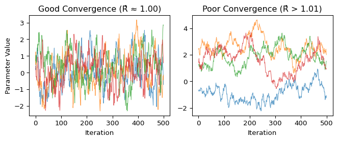
10 Practical Bayesian Inference via Probabilistic Programming
10.1 Learning Objectives
After completing this chapter, you will be able to:
- Build and run Bayesian models using modern software tools, translating mathematical models into working code via probabilistic programming languages such as PyMC or Stan.
- Check if your results are reliable by understanding when sampling has worked correctly and what to do when it hasn’t.
- Work with different types of data including continuous measurements and categorical outcomes.
- Compare different models to see which one better explains your data.
- Understand the practical workflow of Bayesian analysis: from specifying priors to checking results.
Note
This chapter brings Bayesian inference to life through practical computation. While previous chapters established the theoretical foundations of Bayesian methods, here we’ll see how modern probabilistic programming makes these ideas accessible and powerful. The PyMC library for Python is our primary tool, with optional Stan references in R for those already familiar with it.
10.2 Introduction: Why Probabilistic Programming?
10.2.1 Motivation: Bayesian Inference in the Real World
In 2016, the LIGO team announced a stunning discovery: they had detected gravitational waves from colliding black holes, confirming a century-old prediction by Einstein. The detection itself was remarkable – finding a tiny wobble in space-time buried in overwhelming noise. But once they knew something was there, an equally challenging question arose: what exactly had they observed? What were the masses of the black holes? How far away were they? Where in the sky did the merger occur?
This is where Bayesian inference became essential. The team couldn’t just give single “best guess” answers – they needed to quantify their uncertainty about each property by computing the posterior distribution. This mirrors what we saw in Chapter 8 with the search for Air France Flight 447, where Bayesian methods succeeded by combining multiple uncertain sources of information rather than relying on any single piece of evidence. Similarly, for LIGO, using Bayesian methods allowed them to say things like “we’re 90% confident the total mass was between 60 and 70 solar masses” rather than just “the mass was 65 solar masses.”
The LIGO team used specialized inference software developed over many years specifically for gravitational wave astronomy. But here’s the key insight: the same fundamental challenges they faced – combining uncertain information, quantifying confidence in conclusions, handling complex models that do not admit closed-form solutions – appear everywhere in modern data science.
While it used to be the case, it’s not very efficient for every researcher to spend years building custom inference software for their specific problems. That’s where general-purpose probabilistic programming tools come in. They let us tackle similarly complex problems whether we’re:
- Aggregating opinion polls to predict election outcomes (like FiveThirtyEight’s models)1
- Analyzing genomic data to identify bacterial strains in microbiome studies
- Detecting anomalies in sensor networks or financial transactions
- Personalizing recommendations while quantifying uncertainty
In all these problems, we need methods that can handle complex models with dozens or even thousands of parameters, incorporate prior knowledge, and – crucially – tell us how uncertain the results are. The promise of probabilistic programming tools is to allow the researcher to focus on defining the model, and the machinery should automatically take care of the inference.2
10.2.2 From Models to Inference
The gap between statistical theory and practice used to be enormous. Suppose you write down a Bayesian model on paper:
\begin{aligned} \text{Prior: } & \theta \sim \pi(\theta) \\ \text{Likelihood: } & X \mid \theta \sim f(X \mid \theta) \\ \text{Posterior: } & \theta \mid X \sim \frac{f(X \mid \theta) \pi(\theta)}{\int f(X \mid \theta') \pi(\theta') d\theta'} \end{aligned}
How do you solve this? Outside of a few special cases with conjugate priors (like Beta-Binomial or Normal-Normal from Chapter 8), we can’t write down a formula for the posterior distribution.
So how do we actually do Bayesian inference in practice? One common solution is that we don’t compute the posterior distribution directly – we draw samples from it. Using algorithms like Markov Chain Monte Carlo (MCMC), we generate hundreds or thousands of samples \theta_1, \theta_2, \ldots, \theta_m that, collectively, represent the posterior distribution.
Samples are Practical Representations of Distributions
Samples are a very convenient way of representing a probability distribution, whether discrete or continuous. Computing any statistic via samples is straightforward:
- the mean is
np.mean(samples) - a 95% credible interval is
np.percentile(samples, [2.5, 97.5]) - p(\theta > 0) is just
np.mean(samples > 0) - the distribution of some complex function g(\theta) is
g(samples)
The tradeoff is clear: we lose analytical precision but gain computational flexibility.
This is the key insight of practical Bayesian inference: we approximate the posterior through samples rather than computing it exactly. But implementing MCMC correctly used to require deep expertise – you needed to code your own sampler, tune it properly, and verify convergence. If you got any of these steps wrong, your results would be unreliable.
Probabilistic programming makes this much more accessible. With tools like PyMC or Stan, you write your model in code that mirrors the mathematical notation:
with pm.Model() as model:
# Prior
theta = pm.Normal("theta", mu=0, sigma=1)
# Likelihood
x = pm.Normal("x", mu=theta, sigma=1, observed=data)
# Inference happens automatically!
trace = pm.sample()# Model specification (in .stan file)
model {
theta ~ normal(0, 1); // Prior
x ~ normal(theta, 1); // Likelihood
}
# In R:
fit <- stan(file="model.stan", data=list(x=data))The system handles all the computational heavy lifting: computing gradients, tuning samplers, running diagnostics, and producing posterior samples. Ideally, you can focus on the science, not the numerical methods.
10.2.3 Practical Bayesian Inference via PyMC
This chapter teaches practical Bayesian inference through PyMC, the leading probabilistic programming framework in Python. We chose PyMC because it:
- Integrates seamlessly with the Python scientific stack (NumPy, Pandas, Matplotlib)
- Provides state-of-the-art MCMC samplers like NUTS (No-U-Turn Sampler) that work well on complex models
- Includes comprehensive diagnostics to ensure your results are reliable
- Scales from simple examples to production models with thousands of parameters
While Stan is another excellent tool with a vibrant developer and user community (and we’ll include brief notes for Stan users), PyMC’s Python-native approach makes it more accessible and easy to use for data scientists already working in the Python ecosystem.
Stan Quick Reference (Optional)
For readers familiar with Stan: PyMC and Stan solve the same problems but with different philosophies. Stan uses a separate modeling language and compilation step, while PyMC works directly in Python. We’ll include Stan equivalents in secondary tabs and collapsed sections like this one, but they’re completely optional.
10.3 MCMC Foundations and Diagnostics
10.3.1 MCMC Basics
As we mentioned earlier, practical Bayesian inference hinges on a simple but powerful idea: instead of computing integrals analytically (usually impossible), we draw samples from the posterior distribution and use those samples to approximate any quantity we need.
We primarily obtain these samples using Markov Chain Monte Carlo (MCMC). MCMC is not a single algorithm, but a broad family of different methods that allow us to sample from a target probability distribution \pi(\theta), provided its unnormalized density.
The Target: Unnormalized Posteriors
Our goal is to sample from the posterior distribution:
f(\theta \mid x^n) = \frac{f(x^n \mid \theta) f(\theta)}{\int f(x^n \mid \theta) f(\theta) d\theta}
The denominator – the marginal likelihood – is typically intractable. But here’s the fundamental point: MCMC methods only need the unnormalized posterior:
f(\theta \mid x^n) \propto f(x^n \mid \theta) f(\theta)
This is exactly what we can compute easily! The likelihood times the prior gives us an unnormalized density that’s proportional to the posterior, and we can feed this to MCMC algorithms.3
Markov Chains: From Local Moves to Global Exploration
MCMC algorithms iteratively construct a stochastic sequence – a Markov chain \theta_1, \theta_2, \ldots, \theta_m – that explores the parameter space. In the chain, each new state depends only on the current state (the Markov property):
\theta_{m+1} \sim p(\theta_{m+1} | \theta_m)
where p(\theta_{m+1} | \theta_m) depends on the transition kernel unique to each MCMC algorithm. Many algorithms use local transitions (close to the current point), but locality is not required and modern methods can efficiently explore far from the current point. This probability distribution is designed following mathematical rules such that the stationary distribution of the produced chain is our target posterior.4
Think of it like a guided random walk through parameter space: the algorithm is built in such a way that it tends to spend more time in high-probability regions (where the posterior is large) and less time in low-probability regions, producing samples that represent the posterior distribution.
In modern implementations, MCMC sampling is typically split into two phases:
- Warm-up/Adaptation (also called burn-in): Starting from an arbitrary point, the algorithm moves toward higher-probability regions, often adjusting its own settings as it goes. We discard these early draws.5
- Sampling: With settings fixed, the chain explores the high-probability region and we keep these draws as our posterior samples.
MCMC Samples Are Correlated
Consecutive MCMC draws are not independent because each step builds on the previous one. This is normal and does not invalidate the correctness of the algorithm, but it means you may need more iterations to get a good picture of the posterior. Use standard diagnostics (built into most libraries) to detect if you have collected enough samples and, if needed, run longer or use more efficient samplers. Even advanced methods still show some correlation for challenging problems.
10.3.2 Convergence and \hat{R}
MCMC algorithms are constructed such that they are mathematically guaranteed to eventually converge to the target distribution \pi(\theta). However, this guarantee comes with two critical caveats:
- We can only run for finite time: While convergence is guaranteed asymptotically, in practice we must stop after a finite number of iterations.
- No finite-time proof: For most MCMC algorithms, it’s impossible to prove that convergence has been achieved after any specific number of iterations.
This creates a fundamental challenge: How do we know if our MCMC sampler has converged to the correct distribution? While we can never be completely certain, we can detect when it almost certainly has not converged by running multiple chains and checking whether they’re all exploring the same distribution. The most common diagnostic for this is the \hat{R} statistic.
MCMC tries to generate samples from an unknown probability distribution (the posterior). Since we can’t sample directly, we use a clever trick: we create a random walk that naturally spends more time in high-probability regions and less time in low-probability regions.
But how do we know our random walk has found the right distribution? We run multiple independent walks (chains) starting from different places and check if they all end up with the same behavior:
- All chains visit the same regions with the same frequency → Converged ✓
- Different chains are stuck in different regions or show different
patterns → Not converged ✗
- Some chains are still moving away from their starting points → Still warming up ✗
The key insight: agreement between independent chains is our evidence for convergence. Disagreement is a clear sign we need to run longer or fix our sampler.
The most common convergence diagnostic is the \(\hat{R}\) statistic (Potential Scale Reduction Factor), which quantifies whether independent chains have converged to the same distribution.
Conceptually, \(\hat{R}\) can be understood as:
\[\hat{R} \approx \sqrt{\frac{\text{Between-chain variance} + \text{Within-chain variance}}{\text{Within-chain variance}}}\]
This is a simplification – modern software computes rank-normalized split-\(\hat{R}\) [@vehtari2021rank], which splits chains, applies rank normalization for robustness, and uses more sophisticated variance estimators. Use library implementations rather than coding this yourself.
For well-converged chains:
- Between-chain variance ≈ Within-chain variance
- Therefore \(\hat{R} \approx 1.0\)
- Practical threshold: \(\hat{R} \leq 1.01\) indicates convergence
Values above 1.01 suggest the chains haven’t fully mixed and are exploring different regions of the parameter space.
In practice, checking convergence involves both numerical diagnostics and visual inspection. Here’s what good versus poor convergence may look like:
The left panel shows an example of converged chains: all four chains quickly found the target distribution and are exploring the same region, creating overlapping “fuzzy caterpillar” patterns. Each chain visits similar values with similar frequency - this is what we want to see.
The right panel shows an example of non-converged chains: they started far apart and haven’t yet found a common distribution. Some chains are stuck in different regions (perhaps different modes), while others are still wandering. These samples are not representative of the true posterior - using them for inference would be misleading!
The key insight: Good convergence shows all chains “agreeing” about the posterior distribution, exploring the same regions with the same frequency.
10.4 Hello, PyMC: Building and Sampling a Simple Model
10.4.1 Defining Probabilistic Models: Joint → Conditional
Let’s understand how probabilistic programming languages represent models. Any joint distribution can be factorized using the chain rule:
f(y_1, \dots, y_n) = f(y_1 \mid y_2, \dots, y_n) \cdot f(y_2 \mid y_3, \dots, y_n) \cdots f(y_n)
This factorization works for any ordering of variables. In practice, we choose an ordering that makes the conditional distributions simple to specify.
For a basic Bayesian model with parameters \theta and data X, the simplest factorization is:
f(\theta, X) = f(X \mid \theta) \cdot f(\theta)
This is the familiar likelihood times prior, which we can express using sampling notation:
\begin{aligned} \theta &\sim f(\theta) && \text{(prior)} \\ X \mid \theta &\sim f(X \mid \theta) && \text{(likelihood)} \end{aligned}
In probabilistic programming, as in Bayesian statistics, there is no fundamental distinction between parameters and data: both are random variables that we represent using this sampling notation. The only difference is that data values are observed (fixed to measured values), while parameter values are unobserved (to be inferred).
The power of probabilistic programming is that this same approach scales to much more complex models – hierarchical structures, time series, mixture models – all using the same basic principle: we describe the generative process, and the system handles the inference.
Normal Distribution Notation For This Chapter
To align with programming libraries and avoid confusion, this chapter uses a different notation than previous chapters for the normal pdf:
- This chapter (programming notation): X \sim \text{Normal}(170, 20) where 20 is the standard deviation.
- Previous chapters (mathematical notation): X \sim \mathcal{N}(170, 20^2) where 20^2 = 400 is the variance.
Throughout this chapter, we use \text{Normal}(\mu, \sigma) to denote a normal distribution with mean \mu and standard deviation \sigma. This matches the parameterization in PyMC, Stan, and most programming languages.
10.4.2 Estimating the Parameters of a Normal Distribution
For a starter, let’s implement the classic conjugate model from Chapter 8: estimating the mean of a normal distribution with known variance. We’ll use real cholesterol data from the Framingham Heart Study. For this example, we’ll work with a random subsample of 30 subjects, which allows us to better visualize the influence of the prior and the uncertainty in our estimates.
Why Use MCMC for a Conjugate Model?
This normal-normal model has a known analytical solution (see Chapter 8). We use it here to demonstrate MCMC because testing computational methods on problems with known solutions is fundamental practice in data science – it lets us verify our tools work correctly before tackling problems where no closed-form solution exists.
Step 1: Data Exploration
First, let’s load and explore cholesterol measurements from the Framingham Heart Study. This famous dataset has tracked cardiovascular health in thousands of participants since 1948.
import numpy as np
import pandas as pd
import matplotlib.pyplot as plt
# Set random seed for reproducibility
np.random.seed(42)
# Load real data from Framingham Heart Study
fram_data = pd.read_csv("../data/fram.txt", sep="\t")
chol_data = fram_data['CHOL'].dropna().values
# Take a random sample of 30 observations for our analysis
# We'll use these same 30 throughout the chapter for consistency
sample_size = 30
sample_indices = np.random.choice(len(chol_data), sample_size, replace=False)
y = chol_data[sample_indices]
n = len(y)
# Store these for reuse in the categorical section later
chol_sample_continuous = y.copy()
print(f"Cholesterol data summary (mg/dL):")
print(f" Sample mean: {np.mean(y):.1f}")
print(f" Sample std: {np.std(y, ddof=1):.1f}")
print(f" Sample size: {n}")
print(f" Range: [{y.min():.0f}, {y.max():.0f}]")
# Visualize the data
fig, ax = plt.subplots(figsize=(7, 3))
ax.hist(y, bins=15, alpha=0.7, color='C0', edgecolor='black')
ax.axvline(np.mean(y), color='red', linestyle='--', linewidth=2, label=f'Sample mean: {np.mean(y):.1f}')
ax.set_xlabel('Cholesterol (mg/dL)')
ax.set_ylabel('Count')
ax.set_title('Distribution of Cholesterol in Sample')
ax.legend()
plt.show()Cholesterol data summary (mg/dL):
Sample mean: 247.5
Sample std: 60.5
Sample size: 30
Range: [149, 430]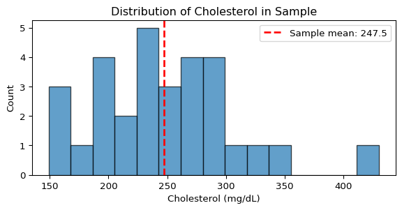
library(tidyverse)
# Set random seed for reproducibility
set.seed(42)
# Load real data from Framingham Heart Study
fram_data <- read.table("../data/fram.txt", sep="\t", header=TRUE)
chol_data <- na.omit(fram_data$CHOL)
# Take a random sample of 30 observations for our analysis
sample_indices <- sample(length(chol_data), 30, replace=FALSE)
y <- chol_data[sample_indices]
n <- length(y)
cat("Cholesterol data summary (mg/dL):\n")
cat(sprintf(" Sample mean: %.1f\n", mean(y)))
cat(sprintf(" Sample std: %.1f\n", sd(y)))
cat(sprintf(" Sample size: %d\n", n))
cat(sprintf(" Range: [%.0f, %.0f]\n", min(y), max(y)))
# Visualize the data
ggplot(data.frame(cholesterol = y), aes(x = cholesterol)) +
geom_histogram(bins = 15, alpha = 0.7, fill = "steelblue", color = "black") +
geom_vline(xintercept = mean(y), color = "red", linetype = "dashed", linewidth = 1) +
annotate("text", x = mean(y) + 20, y = 5,
label = sprintf("Sample mean: %.1f", mean(y)), color = "red") +
labs(x = "Cholesterol (mg/dL)", y = "Count",
title = "Distribution of Cholesterol in Sample") +
theme_minimal()Step 2: Model Specification
Now we’ll specify our Bayesian model, first in statistical language, then in probabilistic programming language.
Model Specification
- Data: Cholesterol measurements X_i \sim \text{Normal}(\mu, \sigma) for i = 1, \ldots, 30
- Prior: \mu \sim \text{Normal}(210, 40) mg/dL
- Known parameter: \sigma = 45 mg/dL (from external population studies)
This example treats \sigma as known from external calibration studies of cholesterol variability in similar populations. This simplification allows us to focus on the mechanics of MCMC sampling. In practice, if \sigma is unknown, it would be given its own prior (e.g., HalfNormal) and estimated jointly with \mu.
import pymc as pm
# For this example, we use a known standard deviation from external calibration
# This value comes from population studies of cholesterol variability
sigma_known = 45.0 # mg/dL - from external population calibration
print(f"Using known population standard deviation: {sigma_known:.1f} mg/dL")
# Build the model
with pm.Model() as normal_model:
# Prior: Normal centered at 210 mg/dL with SD of 40
mu = pm.Normal("mu", mu=210, sigma=40)
# Likelihood: observed data with known standard deviation
y_obs = pm.Normal("y_obs", mu=mu, sigma=sigma_known, observed=y)Using known population standard deviation: 45.0 mg/dLThe with pm.Model() statement creates a container that
collects all the model components. Everything indented under it
automatically becomes part of normal_model. We’ve defined
two key components: a prior distribution for our unknown parameter
mu, and a likelihood that connects our observed data
y to that parameter through observed=y. The
model is now fully specified and ready for inference.
library(rstan)
library(bayesplot)
# Stan model specification
stan_model_code <- "
data {
int<lower=0> n; // Number of observations
real y[n]; // Cholesterol measurements
real<lower=0> sigma; // Known standard deviation
}
parameters {
real mu; // Mean cholesterol level
}
model {
// Prior: Normal centered at 210 mg/dL with SD of 40
mu ~ normal(210, 40);
// Likelihood: observed data with known standard deviation
y ~ normal(mu, sigma);
}
"
# For this example, we use a known standard deviation from external calibration
sigma_known <- 45.0 # mg/dL - from external population calibration
cat(sprintf("Using known population standard deviation: %.1f mg/dL\n", sigma_known))
# Prepare data for Stan
stan_data <- list(
n = n,
y = y,
sigma = sigma_known
)
# Compile the model (but don't sample yet)
compiled_model <- stan_model(model_code = stan_model_code)Stan uses a different approach than PyMC: it requires explicit declaration of data types and uses a separate modeling language. The model is divided into three blocks:
data: Declares the observed data and known parameters (here:n,y,sigma)parameters: Declares the unknown parameters to estimate (here: justmu)model: Specifies the prior and likelihood distributions
Here we compile the model to C++ using stan_model().
This compilation step takes time but produces an optimized executable.
We’ll run the actual sampling in Step 4.
Choosing Priors: Art Meets Science
Our prior \text{Normal}(210, 40) reflects medical knowledge that total cholesterol typically ranges from 130-290 mg/dL in adults. The mean of 210 represents a slightly elevated but common level, while the standard deviation of 40 allows the prior to cover the plausible range without being overly restrictive.
Prior selection balances several considerations:
- Domain expertise: What values are biologically/physically plausible?
- Available information: Previous studies, expert opinion, or pilot data
- Computational stability: Some priors work better with certain samplers
- Sensitivity analysis: How much do results change with different reasonable priors?
While we use informative priors throughout this chapter, remember that “weakly informative” priors on standardized data (like \text{Normal}(0, 10)) are often a safe default when domain knowledge is limited.
Understanding Stan’s Structure (Optional)
Stan is a statically typed probabilistic programming language that takes a different approach from PyMC. Here are the key concepts:
Type Declarations: Stan requires explicit type declarations for all variables:
intfor integers,realfor real numbersvector[n]for real vectors of length nreal y[n]for arrays of n real numbers- Constraints like
<lower=0>enforce positivity
The Three Essential Blocks:
data: Fixed inputs including observations and known parametersparameters: Unknown variables to be estimatedmodel: Prior and likelihood specifications
Compilation Model: Stan compiles your model to optimized C++ code, which means:
- Initial compilation may take substantial time (several minutes depending on model complexity)
- Once compiled, the model can be reused with different data without recompiling
- Hyperparameters (like prior means) should be passed as
dataif you want to experiment with them without recompiling
Vectorization: Stan automatically vectorizes operations. These are equivalent:
// Vectorized (preferred)
y ~ normal(mu, sigma);
// Loop version (avoid)
for (i in 1:n) {
y[i] ~ normal(mu, sigma);
}Stan can be used via multiple interfaces such as RStan for R, PyStan for Python, CmdStan for command-line. See the Stan Toolkit page for an updated list.
Step 3: Prior Predictive Check
Before fitting, let’s verify our model (prior + likelihood) generates reasonable data. This combines draws from our prior on \mu with the likelihood to simulate what data we’d expect to see:
Show code
with normal_model:
# Sample from the prior predictive distribution
prior_pred = pm.sample_prior_predictive(samples=5, random_seed=42)
fig, ax = plt.subplots(figsize=(7, 4))
# Get the μ values sampled from the prior
mu_samples = prior_pred.prior["mu"].values.flatten()
# Plot the data distribution for each sampled μ
import scipy.stats as stats
x_range = np.linspace(50, 400, 300)
for mu in mu_samples:
pdf = stats.norm.pdf(x_range, mu, sigma_known)
ax.plot(x_range, pdf, alpha=0.6, label=f'μ = {mu:.0f}')
# Plot observed data histogram
ax.hist(y, bins=20, alpha=0.3, density=True, color='black', label='Observed data')
ax.set_xlabel("Cholesterol (mg/dL)")
ax.set_ylabel("Density")
ax.set_title("Prior Predictive Check: Possible data distributions from our prior")
ax.legend(fontsize=8)
ax.set_xlim(50, 400)
plt.tight_layout()
plt.show()
print(f"Prior on μ: Normal(210, 40)")
print(f"Each curve shows potential data: Normal(μ, {sigma_known:.1f})")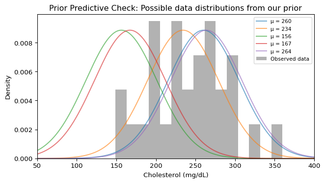
Prior on μ: Normal(210, 40)
Each curve shows potential data: Normal(μ, 45.0)Good! Our observed data falls within the range of data distributions implied by our prior. Each curve represents one possible data distribution given a specific \mu drawn from our prior \text{Normal}(210, 40). The fact that our observed data histogram overlaps with these curves confirms our prior is reasonable.
Step 4: Inference - Sampling from the Posterior
Now we use MCMC to sample from the posterior distribution:
with normal_model:
# Sample from posterior using NUTS
print("Starting MCMC sampling...")
idata = pm.sample(draws=500, tune=500, random_seed=42, progressbar=False)
print("Sampling complete!")Starting MCMC sampling...
Sampling complete!# Sample from the compiled model
cat("Starting MCMC sampling...\n")
normal_fit <- sampling(
compiled_model,
data = stan_data,
iter = 1000, # 500 warmup + 500 sampling per chain
chains = 4,
seed = 42
)
cat("Sampling complete!\n")
What’s Actually Happening During Sampling?
Modern probabilistic programming uses an algorithm called NUTS (No-U-Turn Sampler) that automatically explores the posterior distribution. Two key features:
Multiple chains: PyMC runs multiple independent chains (typically 4), each starting from a different random initial value. This parallelizes computation (using multiple CPU cores) and is essential for convergence diagnostics - we need multiple chains to verify they all find the same posterior distribution. In our example, we’re using the default number of chains (likely 4 on most systems).
Two-phase sampling: Each chain goes through:
- Tuning/Warmup: The sampler learns the “shape” of your posterior – where to look, how big steps to take. These samples are discarded. PyMC’s default is typically 1000 iterations, but we use
tune=500here for speed. - Sampling: Using what it learned, the sampler collects the actual samples we’ll use for inference. Only these post-warmup samples are returned and used for all subsequent analysis. PyMC’s default is typically 1000 draws, but we use
draws=500here for speed.
With our settings (500 post-warmup draws per chain, likely 4 chains), we get 2000 total posterior samples. The iteration counts aren’t rules – complex models might need thousands, simple ones might need fewer. The key innovation is that NUTS adapts automatically, unlike older methods that required manual tuning for each problem.
Step 5: Convergence Diagnostics
Before trusting our posterior samples, we must verify that the MCMC sampler has converged. Recall from the discussion of convergence and \hat{R} that convergence means our chains have found and are exploring the target distribution.
All diagnostics below are computed using only the post-warmup samples – the warmup/tuning iterations have already been discarded. With our settings (4 chains, 500 samples each), we’re analyzing 2000 posterior draws total.
Numerical Diagnostics
First, let’s check the key convergence statistics. Modern MCMC diagnostics focus on two critical measures:
\hat{R} (R-hat): Compares variation between chains to variation within chains. Values close to 1.0 indicate all chains have converged to the same distribution. The threshold \hat{R} \leq 1.01 has become standard based on extensive empirical studies (Vehtari et al. 2021) showing it reliably detects non-convergence.
ESS (Effective Sample Size): Because MCMC samples are autocorrelated, 1000 samples don’t provide as much information as 1000 independent draws. ESS estimates the equivalent number of independent samples. The conventional threshold of ESS > 400 total (or 100 per chain with 4 chains) typically ensures stable estimates for posterior means and 95% credible intervals, though more extreme quantiles may require higher ESS.6
We use ArviZ, Python’s library for Bayesian model analysis that provides diagnostics and visualization tools.
import arviz as az
# Check convergence with comprehensive diagnostics
print(az.summary(idata, var_names=["mu"])) mean sd hdi_3% hdi_97% mcse_mean mcse_sd ess_bulk ess_tail \
mu 246.258 7.67 231.363 260.06 0.255 0.14 910.0 1518.0
r_hat
mu 1.0 The ArviZ summary table reports:
- mean, sd: Posterior mean and standard deviation
- hdi_3%, hdi_97%: 94% credible interval
- r_hat: The \(\hat{R}\) statistic (also called the potential scale reduction factor)
- ess_bulk: Effective sample size for central posterior quantities
- ess_tail: Effective sample size for tail quantiles (5th, 95th percentiles)
In our example, \(\hat{R} = 1.0\) indicates excellent convergence, and the high ESS values (well above 400) mean we have sufficient effective samples for reliable inference.
# Print comprehensive summary including R̂ and ESS
print(normal_fit)The Stan output displays:
- mean, sd: Posterior mean and standard deviation
- quantiles: Including median (50%) and 95% credible interval (2.5%, 97.5%)
- n_eff: Effective sample size for each parameter
- Rhat: The \(\hat{R}\) statistic (shown in the rightmost column)
Visual Diagnostics: Trace Plots
Numerical diagnostics can miss some problems, so we always inspect trace plots visually:
Show code
# Create trace plot for visual inspection
fig, axes = plt.subplots(1, 2, figsize=(7, 3))
# Extract mu samples for all chains
mu_samples = idata.posterior["mu"].values
# Plot traces for each chain
for chain in range(mu_samples.shape[0]):
axes[0].plot(mu_samples[chain, :], alpha=0.7, linewidth=0.8)
axes[0].set_xlabel("Iteration")
axes[0].set_ylabel("μ")
axes[0].set_title("Trace Plot")
# Plot overlaid densities
for chain in range(mu_samples.shape[0]):
axes[1].hist(mu_samples[chain, :], bins=30, alpha=0.5, density=True)
axes[1].set_xlabel("μ")
axes[1].set_ylabel("Density")
axes[1].set_title("Chain Densities")
plt.tight_layout()
plt.show()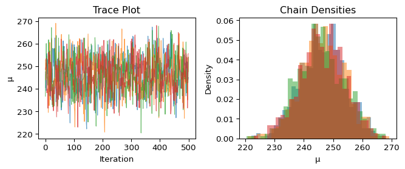
What we’re looking for:
- Trace plot (left): Should look like a “fuzzy caterpillar” - random noise around a stable value with no trends or drift
- Densities (right): All chains should show similar distributions
Our traces show good convergence: the chains quickly found the target distribution and are exploring it thoroughly, with all chains showing similar behavior.
When Diagnostics Fail
If you see:
- \hat{R} > 1.01: Chains haven’t converged to the same distribution
- Low ESS (< 100 per chain): Too much autocorrelation in your samples
- Trends in trace plots: Chains still moving toward the target distribution
- Multimodal traces: Chains stuck exploring different regions
When diagnostics indicate problems, the most common solution is simply to run the sampler longer (more warmup and/or more iterations). If problems persist, it usually indicates issues with the model specification that require more careful investigation.
With our convergence confirmed, we can now trust our posterior samples for inference.
Step 6: Posterior Analysis
Now that we’ve confirmed convergence, let’s examine what we’ve learned about the mean cholesterol level. Remember, our posterior is represented by samples - let’s start by simply looking at them:
Show code
# Extract posterior samples for mu
posterior_mu = idata.posterior["mu"].values.flatten()
# Simple histogram of posterior samples
plt.figure(figsize=(6, 3))
plt.hist(posterior_mu, bins=30, alpha=0.7, color='C0')
plt.xlabel("μ (mg/dL)")
plt.ylabel("Count")
plt.title(f"Posterior samples of μ (n={len(posterior_mu)})")
plt.axvline(210, color='gray', linestyle=':', label='Prior mean')
plt.axvline(np.mean(y), color='red', linestyle='--', label='Data mean')
plt.legend()
plt.show()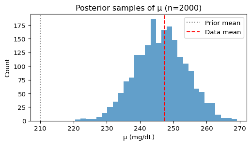
Since the posterior is just a collection of samples, we can compute any summary statistic we want:
Show code
# Compute summaries from the samples
print(f"Posterior mean: {np.mean(posterior_mu):.1f} mg/dL")
print(f"Posterior std: {np.std(posterior_mu):.1f} mg/dL")
print(f"95% credible interval: [{np.percentile(posterior_mu, 2.5):.1f}, "
f"{np.percentile(posterior_mu, 97.5):.1f}] mg/dL")Posterior mean: 246.3 mg/dL
Posterior std: 7.7 mg/dL
95% credible interval: [231.4, 261.3] mg/dLIn Python, ArviZ provides a convenient function that creates a more informative visualization with these summaries included:
Show code
# Professional posterior plot with all summaries
fig, ax = plt.subplots(figsize=(6, 4))
az.plot_posterior(idata, var_names=["mu"], ax=ax)
ax.axvline(210, color='gray', linestyle=':', linewidth=2, label='Prior mean (210)')
ax.axvline(np.mean(y), color='red', linestyle='--', linewidth=2, label=f'Data mean ({np.mean(y):.1f})')
ax.legend()
plt.show()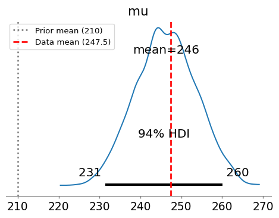
The posterior has been pulled from the prior mean (210 mg/dL) toward the sample mean of our data. This is exactly what we expect from Bayesian updating!
10.5 Discrete Data Models: Dirichlet-Categorical
10.5.1 From Continuous to Categorical: Medical Discretization
So far, we’ve treated cholesterol as a continuous measurement. However, in clinical practice, physicians often work with categorical classifications that guide treatment decisions. The National Cholesterol Education Program defines standard categories for total cholesterol:
- Desirable: < 200 mg/dL
- Borderline High: 200-239 mg/dL
- High: ≥ 240 mg/dL
This discretization isn’t arbitrary – it reflects clinical action thresholds. Patients with “High” cholesterol typically need immediate intervention, while “Borderline High” patients might start with lifestyle modifications. Let’s analyze our Framingham data using these medically-relevant categories.
Show code
# Load the full Framingham dataset (not just our sample of 30)
full_chol = fram_data['CHOL'].dropna().values
n_full = len(full_chol)
# Discretize using clinical thresholds
def categorize_cholesterol(chol):
if chol < 200:
return 0 # Desirable
elif chol < 240:
return 1 # Borderline High
else:
return 2 # High
# Apply categorization
chol_categories = np.array([categorize_cholesterol(c) for c in full_chol])
category_names = ['Desirable', 'Borderline', 'High']
# Count observations in each category
print(f"Cholesterol categories in Framingham data (n={n_full}):")
for i, name in enumerate(category_names):
count = (chol_categories == i).sum()
print(f" {name}: {count} ({100*count/n_full:.1f}%)")Cholesterol categories in Framingham data (n=1394):
Desirable: 322 (23.1%)
Borderline: 495 (35.5%)
High: 577 (41.4%)Notice that the Framingham population has concerning cholesterol levels – a large proportion with high cholesterol! This makes sense as: 1. The Framingham Heart Study began in 1948 to understand cardiovascular disease 2. This data is from the 1990s, before widespread statin use 3. It represents a specific community with higher cardiovascular risk
In contrast, modern US data (2015-2018) shows dramatic improvements with much lower rates of high cholesterol, thanks to better medications and lifestyle awareness.
Let’s visualize the discretization to see what information we’re preserving versus losing:
Show code
fig, (ax1, ax2) = plt.subplots(1, 2, figsize=(7, 3))
# Original continuous distribution
ax1.hist(full_chol, bins=30, alpha=0.7, edgecolor='black')
ax1.axvline(200, color='red', linestyle='--', label='200 mg/dL')
ax1.axvline(240, color='red', linestyle='--', label='240 mg/dL')
ax1.set_xlabel('Cholesterol (mg/dL)')
ax1.set_ylabel('Count')
ax1.set_title('Continuous Distribution')
ax1.legend()
# Categorical distribution
category_counts = [(chol_categories == i).sum() for i in range(3)]
ax2.bar(range(3), category_counts,
tick_label=category_names, alpha=0.7, edgecolor='black')
ax2.set_ylabel('Count')
ax2.set_title('Categorical Distribution')
ax2.set_xlabel('Category')
plt.tight_layout()
plt.show()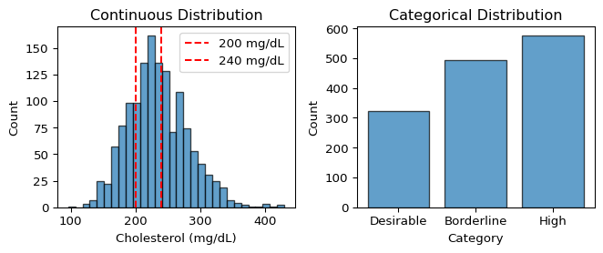
10.5.2 The Dirichlet-Categorical Model
When we have categorical data, we need a different statistical model. The natural choice is:
- Data: Each observation belongs to one of K categories
- Parameter: A probability vector \mathbf{p} = (p_1, \ldots, p_K) where p_k is the probability of category k
- Constraint: The probabilities must sum to 1: \sum_{k=1}^K p_k = 1
This constraint means \mathbf{p} lives on the probability simplex – the set of all valid probability distributions over K categories. For our 3-category cholesterol data, this is a triangular surface in 3D space where any point represents a valid probability distribution.
The Dirichlet distribution is the natural prior for probability vectors:
\mathbf{p} \sim \text{Dirichlet}(\boldsymbol{\alpha})
where \boldsymbol{\alpha} = (\alpha_1, \ldots, \alpha_K) are concentration parameters. The Dirichlet parameters have the following interpretation:
- \alpha_k acts like “pseudo-counts” for category k
- Higher \alpha_k means we expect category k to be more probable
- Sum \sum \alpha_k controls concentration: larger sum = more concentrated around the mean
Dirichlet-Categorical Conjugacy
The Dirichlet and Categorical form a conjugate pair, similar to Beta-Binomial:
- Prior: \mathbf{p} \sim \text{Dirichlet}(\boldsymbol{\alpha})
- Likelihood: Observe n_k instances of category k
- Posterior: \mathbf{p} \mid \text{data} \sim \text{Dirichlet}(\boldsymbol{\alpha} + \mathbf{n})
The posterior simply adds the observed counts to the prior pseudo-counts!
10.5.3 Implementing the Model in PyMC
Let’s fit a Dirichlet-Categorical model to estimate the population proportions of each cholesterol category. We’ll use the same 30 subjects we analyzed earlier with the Normal model, but now treating their cholesterol as categorical:
Show code
# Use the same 30 observations from the Normal-Normal section
# (We are analyzing the same people in different ways!)
chol_sample = chol_sample_continuous # The continuous values from earlier
chol_cats_sample = np.array([categorize_cholesterol(c) for c in chol_sample])
print(f"Using the same {sample_size} subjects from earlier (now categorized)")
# Count observations in each category (store for later use)
sample_counts = np.array([(chol_cats_sample == i).sum() for i in range(3)])
for i, name in enumerate(category_names):
print(f" {name}: {sample_counts[i]} ({100*sample_counts[i]/sample_size:.1f}%)")Using the same 30 subjects from earlier (now categorized)
Desirable: 7 (23.3%)
Borderline: 8 (26.7%)
High: 15 (50.0%)Now let’s build the Bayesian model:
Show code
with pm.Model() as model_uniform:
# Prior: symmetric Dirichlet with concentration 1 (uniform over simplex)
# This is equivalent to uniform prior over all possible probability distributions
alpha = np.ones(3)
# Prior for probability of each category
p = pm.Dirichlet("p", a=alpha)
# Likelihood: observed category assignments
# PyMC's Categorical uses 0-indexing
observed = pm.Categorical("observed", p=p, observed=chol_cats_sample)
print("Model 1 - Uniform Prior: Dirichlet(1, 1, 1)")
print(" Interpretation: Equal probability for any distribution")
print(" Prior strength: Equivalent to 3 pseudo-observations (very weak)") # 1 + 1 + 1 = 3Model 1 - Uniform Prior: Dirichlet(1, 1, 1)
Interpretation: Equal probability for any distribution
Prior strength: Equivalent to 3 pseudo-observations (very weak)Let’s check what our prior implies about the data:
Show code
with model_uniform:
prior = pm.sample_prior_predictive(samples=1000, random_seed=42)
# Extract prior samples for p - flatten across chains
prior_p = prior.prior["p"].values.reshape(-1, 3) # Shape: (n_samples, 3)
fig, (ax1, ax2) = plt.subplots(1, 2, figsize=(7, 3))
# Plot prior samples for each category probability
for i, name in enumerate(category_names):
ax1.hist(prior_p[:, i], bins=30, alpha=0.5, label=name)
ax1.set_xlabel('Probability')
ax1.set_ylabel('Prior samples')
ax1.set_title('Prior on Category Probabilities')
ax1.legend()
# Show some example probability vectors
width = 0.25
x_pos = np.arange(3)
ax2.bar(x_pos - width, prior_p[0, :], width, alpha=0.5, label='Sample 1')
ax2.bar(x_pos, prior_p[10, :], width, alpha=0.5, label='Sample 2')
ax2.bar(x_pos + width, prior_p[20, :], width, alpha=0.5, label='Sample 3')
ax2.set_xticks(x_pos)
ax2.set_xticklabels(category_names)
ax2.set_ylabel('Probability')
ax2.set_title('Example Prior Probability Vectors')
ax2.legend()
plt.tight_layout()
plt.show()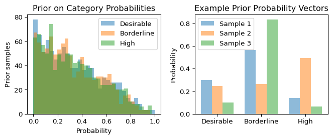
With a symmetric \text{Dirichlet}(1,1,1) prior, we’re saying all probability distributions are equally likely a priori – a very uninformative prior.
10.5.4 Sampling and Convergence
Now let’s sample from the posterior:
Show code
with model_uniform:
# Sample from posterior
idata_uniform = pm.sample(
draws=1000,
tune=1000,
random_seed=42,
progressbar=False,
# Store pointwise log-likelihoods for each observation
# Without this, we can't compute LOO or WAIC later!
idata_kwargs={"log_likelihood": True}
)
print("Sampling complete!")Sampling complete!Let’s check convergence with our standard diagnostics:
Show code
# Summary statistics with convergence diagnostics
print(az.summary(idata_uniform, var_names=["p"])) mean sd hdi_3% hdi_97% mcse_mean mcse_sd ess_bulk ess_tail \
p[0] 0.240 0.074 0.102 0.372 0.002 0.001 1903.0 2206.0
p[1] 0.273 0.077 0.129 0.414 0.002 0.001 1545.0 2146.0
p[2] 0.488 0.085 0.335 0.652 0.001 0.001 3521.0 2654.0
r_hat
p[0] 1.0
p[1] 1.0
p[2] 1.0 Excellent! All \hat{R} values are 1.0 and ESS values are high. Let’s visualize the traces:
Show code
fig, axes = plt.subplots(3, 2, figsize=(7, 4))
# Extract posterior samples
posterior_p = idata_uniform.posterior["p"].values
for i, name in enumerate(category_names):
# Trace plot
for chain in range(posterior_p.shape[0]):
axes[i, 0].plot(posterior_p[chain, :, i], alpha=0.7, linewidth=0.5)
axes[i, 0].set_ylabel(f'p[{name}]', fontsize=9)
if i == 2:
axes[i, 0].set_xlabel('Iteration')
axes[i, 0].set_title(f"Trace: '{name}' category", fontsize=9)
# Density plot
axes[i, 1].hist(posterior_p[:, :, i].flatten(), bins=30,
alpha=0.7, density=True, edgecolor='black')
axes[i, 1].set_xlabel('Probability')
axes[i, 1].set_title(f"Posterior: '{name}' category", fontsize=9)
# Add observed proportion as vertical line
observed_prop = sample_counts[i] / sample_size
axes[i, 1].axvline(observed_prop, color='red', linestyle='--',
label=f'Observed: {observed_prop:.3f}')
if i == 0:
axes[i, 1].legend(fontsize=8)
plt.tight_layout()
plt.show()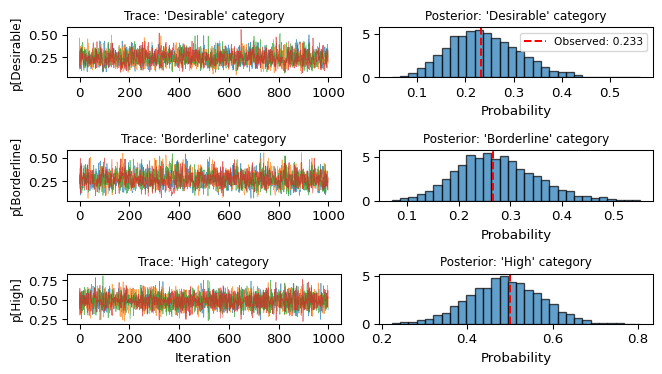
10.5.5 Posterior Analysis
Let’s examine what we’ve learned about the population proportions:
Show code
# Compute posterior statistics
posterior_flat = posterior_p.reshape(-1, 3) # Flatten chains
print("Posterior estimates of population proportions:")
print("=" * 60)
for i, name in enumerate(category_names):
post_mean = np.mean(posterior_flat[:, i])
post_std = np.std(posterior_flat[:, i])
ci_low, ci_high = np.percentile(posterior_flat[:, i], [2.5, 97.5])
observed = sample_counts[i] / sample_size
print(f"{name:12s}: Mean = {post_mean:.3f} ± {post_std:.3f}")
print(f" 95% CI = [{ci_low:.3f}, {ci_high:.3f}]")
print(f" Observed = {observed:.3f}")
print()Posterior estimates of population proportions:
============================================================
Desirable : Mean = 0.240 ± 0.074
95% CI = [0.109, 0.400]
Observed = 0.233
Borderline : Mean = 0.273 ± 0.077
95% CI = [0.135, 0.438]
Observed = 0.267
High : Mean = 0.488 ± 0.085
95% CI = [0.322, 0.652]
Observed = 0.500
The posterior estimates are pulled toward the observed proportions, but with only 30 observations, there’s substantial uncertainty. This small sample size is intentional – it allows us to see how different priors influence the posterior in the next section.
Stan Implementation (Optional)
For readers familiar with Stan, here’s the equivalent categorical model:
data {
int<lower=1> n; // Number of observations
int<lower=1> k; // Number of categories
int<lower=1,upper=k> x[n]; // Category assignments (1-indexed!)
vector[k] alpha; // Dirichlet prior parameters
}
parameters {
simplex[k] p; // Probability vector (sums to 1)
}
model {
p ~ dirichlet(alpha); // Prior
x ~ categorical(p); // Likelihood
}
generated quantities {
// Store log-likelihood for LOO
vector[n] log_lik;
for (i in 1:n) {
log_lik[i] = categorical_lpmf(x[i] | p);
}
}Note that Stan uses 1-based indexing for categories, unlike PyMC’s 0-based indexing.
10.5.6 Alternative Priors: The Impact of Prior Knowledge
So far, we’ve used an uninformative Dirichlet(1,1,1) prior, expressing complete ignorance about cholesterol distributions. But what if we have prior knowledge? Let’s explore how different priors affect model behavior by comparing three alternatives:
- Uniform prior (what we have): Complete ignorance
- Framingham prior: Based on this specific population (1990s cardiovascular study)
- Modern US prior: Based on contemporary population (2015-2018 data)
Now let’s create a prior based on the actual Framingham population to compare with our uniform prior:
Show code
# Model 2: Informative prior based on Framingham population
with pm.Model() as model_informative:
# Prior based on actual Framingham data: ~23% Desirable, 36% Borderline, 41% High
# Using pseudo-counts of (5, 7, 8) = 20 total, moderate confidence
alpha_informed = np.array([5, 7, 8])
p = pm.Dirichlet("p", a=alpha_informed)
observed = pm.Categorical("observed", p=p, observed=chol_cats_sample)
print("Model 2 - Framingham Prior: Dirichlet(5, 7, 8)")
print(" Interpretation: Expects 25% Desirable, 35% Borderline, 40% High")
print(" Prior strength: Equivalent to 20 pseudo-observations")
prior_strength = 20 # 5 + 7 + 8 = 20 total pseudo-observations
print(f" (That's {100*prior_strength/sample_size:.0f}% as strong as our {sample_size} real observations!)")
# Sample from posterior
with model_informative:
idata_informative = pm.sample(
draws=1000,
tune=1000,
random_seed=42,
progressbar=False,
idata_kwargs={"log_likelihood": True}
)Model 2 - Framingham Prior: Dirichlet(5, 7, 8)
Interpretation: Expects 25% Desirable, 35% Borderline, 40% High
Prior strength: Equivalent to 20 pseudo-observations
(That's 67% as strong as our 30 real observations!)And a modern US population prior:
Show code
# Model 3: Modern US population prior
with pm.Model() as model_modern:
# Prior based on modern US data (2015-2018): ~55% Desirable, 33% Borderline, 12% High
# Reflects improvements from statins and lifestyle changes
alpha_modern = np.array([11, 7, 2])
p = pm.Dirichlet("p", a=alpha_modern)
observed = pm.Categorical("observed", p=p, observed=chol_cats_sample)
print("Model 3 - Modern US Prior: Dirichlet(11, 7, 2)")
print(" Interpretation: Expects 55% Desirable, 35% Borderline, 10% High")
print(" Prior strength: Equivalent to 20 pseudo-observations")
prior_strength = 20 # 11 + 7 + 2 = 20 total pseudo-observations
print(f" (That's {100*prior_strength/sample_size:.0f}% as strong as our {sample_size} real observations!)")
# Sample from posterior
with model_modern:
idata_modern = pm.sample(
draws=1000,
tune=1000,
random_seed=42,
progressbar=False,
idata_kwargs={"log_likelihood": True}
)Model 3 - Modern US Prior: Dirichlet(11, 7, 2)
Interpretation: Expects 55% Desirable, 35% Borderline, 10% High
Prior strength: Equivalent to 20 pseudo-observations
(That's 67% as strong as our 30 real observations!)Let’s visualize how these priors differ and how they influence the posterior:
Show code
fig, axes = plt.subplots(3, 3, figsize=(7, 5))
# Prior parameters
priors = {
'Uniform': np.array([1, 1, 1]),
'Framingham': np.array([5, 7, 8]),
'Modern US': np.array([11, 7, 2])
}
# Posteriors
posteriors = {
'Uniform': idata_uniform.posterior["p"].values.reshape(-1, 3),
'Framingham': idata_informative.posterior["p"].values.reshape(-1, 3),
'Modern US': idata_modern.posterior["p"].values.reshape(-1, 3)
}
for row, (name, alpha) in enumerate(priors.items()):
# Plot prior means
prior_mean = alpha / alpha.sum()
axes[row, 0].bar(range(3), prior_mean, tick_label=category_names, alpha=0.7)
axes[row, 0].set_title(f'{name} Prior Mean', fontsize=9)
axes[row, 0].set_ylim(0, 0.7)
if row == 2:
axes[row, 0].set_xlabel('Category')
# Plot posterior distributions
for i, cat in enumerate(category_names):
axes[row, 1].hist(posteriors[name][:, i], bins=20, alpha=0.5,
label=cat if row == 0 else "")
axes[row, 1].set_title(f'{name} Posterior', fontsize=9)
axes[row, 1].set_xlim(0, 0.7)
if row == 0:
axes[row, 1].legend(fontsize=7)
if row == 2:
axes[row, 1].set_xlabel('Probability')
# Plot posterior means with observed
post_mean = posteriors[name].mean(axis=0)
observed_prop = sample_counts / sample_size
x = np.arange(3)
width = 0.35
axes[row, 2].bar(x - width/2, post_mean, width, label='Posterior', alpha=0.7)
axes[row, 2].bar(x + width/2, observed_prop, width, label='Observed', alpha=0.7)
axes[row, 2].set_xticks(x)
axes[row, 2].set_xticklabels(category_names, rotation=45, ha='right', fontsize=8)
axes[row, 2].set_title(f'{name} vs Data', fontsize=9)
axes[row, 2].set_ylim(0, 0.7)
if row == 0:
axes[row, 2].legend(fontsize=7)
axes[0, 0].set_ylabel('Uniform', fontsize=9)
axes[1, 0].set_ylabel('Framingham', fontsize=9)
axes[2, 0].set_ylabel('Modern US', fontsize=9)
plt.tight_layout()
plt.show()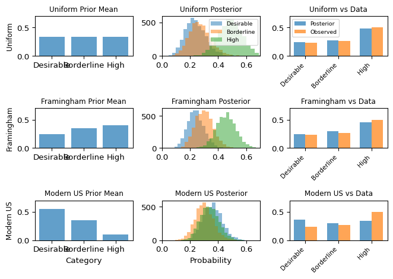
Notice how the different priors pull the posterior in different directions. With only 30 observations, the prior has substantial influence – the posteriors are noticeably different from each other. The Framingham prior (matching this population) and uniform prior produce similar posteriors, while the modern US prior (assuming much healthier cholesterol) is pulled harder toward the observed data but still shows its optimistic bias.
We now have three models of the same data with different priors. In the next section, we’ll use model comparison to see which priors are compatible with the data and which should be rejected.
10.6 Bayesian Model Comparison
In the previous section, we constructed three models for the same cholesterol data, differing only in their priors. How do we decide which is better? The answer depends on what we mean by “better” and what assumptions we’re willing to make.
In a Bayesian context, testing is usually performed via model comparison. The aim is to infer which of multiple models \mathcal{M}_1, \ldots, \mathcal{M}_k is the best fit for the data.
10.6.1 Two Philosophies of Model Comparison
Bayesian model comparison comes in two fundamentally different flavors, depending on what we believe about reality (Kelter 2021):
\mathcal{M}-closed perspective: Assumes one of our candidate models is actually the true data-generating process. The set \mathcal{M} of models is “closed” because it contains the truth – we just need to figure out which one it is. This classical Bayesian approach treats model selection like a multiple choice question where one answer is definitely correct. We compute posterior probabilities over models, \mathbb{P}(\mathcal{M}_i \mid X^n = x^n), asking: “Given the data, what’s the probability that Model i is the true model?”
\mathcal{M}-open perspective: Acknowledges that all our models are wrong – approximations of a reality that’s more complex than anything we can write down. The model set is “open” because the true process lies outside it. Since no model is true, we can’t ask “which one is correct?” Instead, we ask “which approximation makes the best predictions?” This is the more realistic perspective for most real-world problems.
In practice, the \mathcal{M}-open perspective is more realistic. Statistician George E. P. Box famously said “All models are wrong, but some are useful.” Our cholesterol categorizations are clearly simplifications – the underlying biology is continuous, not discrete. So we’ll focus on predictive performance.
10.6.2 Model Comparison in the \mathcal{M}-Closed Setting
In the \mathcal{M}-closed approach, we apply Bayes’ theorem directly to models:
\mathbb{P}(\mathcal{M}_i \mid X^n = x^n) \propto f(x^n \mid \mathcal{M}_i) \cdot \mathbb{P}(\mathcal{M}_i)
The key quantity here is f(x^n \mid \mathcal{M}_i), called the marginal likelihood or evidence, which integrates the likelihood over all possible parameter values weighted by the prior:
f(x^n \mid \mathcal{M}_i) = \int f(x^n \mid \theta, \mathcal{M}_i) f(\theta \mid \mathcal{M}_i) \, d\theta
This integral averages how well the model explains the data across all parameter values the prior considers plausible.
To compare two models, we often compute the ratio of their posterior probabilities:
\frac{\mathbb{P}(\mathcal{M}_1 \mid x^n)}{\mathbb{P}(\mathcal{M}_2 \mid x^n)} = \frac{f(x^n \mid \mathcal{M}_1)}{f(x^n \mid \mathcal{M}_2)} \cdot \frac{\mathbb{P}(\mathcal{M}_1)}{\mathbb{P}(\mathcal{M}_2)}
When we assign equal prior probabilities to both models (no preference a priori), this simplifies to just the ratio of marginal likelihoods, called the Bayes factor:
\text{BF}_{12} = \frac{f(x^n \mid \mathcal{M}_1)}{f(x^n \mid \mathcal{M}_2)}
A Bayes factor of 10 means the data are 10 times more likely under Model 1 than Model 2.
A Note on Prior Sensitivity
Bayes factors are widely used and mathematically principled, but they do have an important limitation: they are sensitive to the prior, especially its width.
Making a prior twice as wide can dramatically reduce the marginal likelihood, even if the posterior barely changes. This happens because the likelihood is usually much more concentrated than the prior. A broader prior “wastes” probability mass on unlikely parameter values, reducing the evidence.
This sensitivity doesn’t make Bayes factors wrong – they correctly answer the question “which model is more probable?” under the \mathcal{M}-closed assumption. But it does mean you need confidence in your prior specification, which can be challenging in practice.
10.6.3 The Alternative: Predictive Model Comparison
Given this sensitivity and the fact that all our models are approximations anyway, this chapter focuses on the \mathcal{M}-open approach. Instead of asking “which model is true?” (when none are), we ask “which model makes better predictions?” This shifts our focus from model probability to predictive performance.
Expected Log Predictive Density (ELPD)
To predict a new observation x^\star after seeing data X^n, we use the posterior predictive distribution:
p(x^\star \mid X^n) = \int p(x^\star \mid \theta) p(\theta \mid X^n) \, d\theta
Taking the logarithm gives the log predictive density (LPD) for that specific observation:
\text{LPD}(x^\star) = \log p(x^\star \mid X^n)
But LPD for a single point isn’t enough – it depends on which x^\star we happen to see. We need the expected log predictive density (ELPD) over all possible future observations:
\text{ELPD} = \mathbb{E}_{x^\star \sim p_{\text{true}}}[\text{LPD}(x^\star)]
This measures average predictive performance, which is what we actually care about for model comparison.
In practice with MCMC samples \theta_i \sim p(\theta \mid X^n), we approximate LPD as:
\widehat{\text{LPD}}(x^\star) = \log \left( \frac{1}{m} \sum_{i=1}^m p(x^\star \mid \theta_i) \right)
Leave-One-Out Cross-Validation for ELPD
We can’t compute true ELPD without knowing p_{\text{true}} and having infinite future data. The solution is leave-one-out cross-validation (LOO-CV): treat each existing observation as a “future” test point for a model trained without it.
For each observation x_k, we’d ideally:
- Obtain the posterior p(\theta \mid X_{-k}) using all data except x_k
- Compute the posterior predictive p(x_k \mid X_{-k}) = \int p(x_k \mid \theta) p(\theta \mid X_{-k}) d\theta
- Sum over all k to estimate ELPD
This gives ELPD-LOO:
\text{ELPD-LOO} = \sum_{k=1}^n \log p(x_k \mid X_{-k})
Actually refitting the model n times would be computationally prohibitive. Fortunately, we can approximate this efficiently by reweighting our existing posterior samples:
\text{ELPD-LOO} = \sum_{k=1}^n \log \left( \frac{\sum_{i=1}^m w_i^{(k)} p(x_k \mid \theta_i)}{\sum_{i=1}^m w_i^{(k)}} \right)
where the weights w_i^{(k)} are computed using Pareto-smoothed importance sampling (PSIS). This is what ArviZ’s loo() function implements.
10.6.4 Comparing Priors With Model Comparison
Now we have three models of the same data, differing only in their priors. Let’s see which prior leads to better predictive performance and what this tells us about Bayesian robustness.
Let’s compare them using LOO:
Show code
# Compute LOO for all three models
loo_uniform = az.loo(idata_uniform)
loo_informative = az.loo(idata_informative)
loo_modern = az.loo(idata_modern)
print("Model Comparison - ELPD-LOO (higher is better):")
print("=" * 50)
print(f"Uniform Prior: {loo_uniform.elpd_loo:.2f} ± {loo_uniform.se:.2f}")
print(f"Framingham Prior: {loo_informative.elpd_loo:.2f} ± {loo_informative.se:.2f}")
print(f"Modern US Prior: {loo_modern.elpd_loo:.2f} ± {loo_modern.se:.2f}")
print("\nNote: The ± values show each model's individual uncertainty.")
print("To compare models, we need the SE of their *difference*, computed below.")Model Comparison - ELPD-LOO (higher is better):
==================================================
Uniform Prior: -33.11 ± 1.95
Framingham Prior: -32.50 ± 1.59
Modern US Prior: -34.28 ± 0.38
Note: The ± values show each model's individual uncertainty.
To compare models, we need the SE of their *difference*, computed below.
Important: Don’t Compare Individual Standard Errors!
The ± values above show each model’s individual ELPD uncertainty (se in the comparison table). You cannot determine if models are significantly different by checking if these intervals overlap - that would be statistically incorrect.
Why? Both models are fitted to the same data, so their ELPD estimates are correlated (they make similar errors on the same hard-to-predict observations). The proper comparison requires computing the standard error of the difference (dse in the comparison table), which az.compare() does for us below.
Now let’s formally compare all three looking at the difference in ELPD-LOO from the best model (elpd_diff):
Show code
# Compare all three models
comparison = az.compare({
"Uniform": idata_uniform,
"Framingham": idata_informative,
"Modern US": idata_modern
})
print("\nRanking (best to worst):")
print(comparison)
Ranking (best to worst):
rank elpd_loo p_loo elpd_diff weight se dse \
Framingham 0 -32.504530 1.228303 0.000000 1.0 1.590736 0.00000
Uniform 1 -33.114828 1.947462 0.610298 0.0 1.954769 0.43796
Modern US 2 -34.276520 1.293665 1.771990 0.0 0.383564 1.63829
warning scale
Framingham False log
Uniform False log
Modern US False log The comparison table shows models ranked by ELPD (higher is better). The key columns are:
- rank: from best to worst
- elpd_diff: Difference from best model (0 for best, negative for worse)
- dse: Standard error of the difference between that model and the best model
- se: Standard error of each model’s individual ELPD (not used for comparison!)
- Decision rule: If |elpd_diff| > 2×dse, the difference is statistically significant
Interpreting the Results
Let’s visualize the comparison:
Show code
# Create comparison plot with custom visualization
fig, (ax1, ax2) = plt.subplots(2, 1, figsize=(7, 5))
# Top panel: ArviZ default comparison plot (ELPD values)
az.plot_compare(comparison, ax=ax1)
ax1.set_title("Model Comparison: ELPD-LOO")
# Bottom panel: Difference from best with 2×dse error bars
model_names = comparison.index.tolist()
elpd_diffs = comparison['elpd_diff'].values
dse_values = comparison['dse'].values
# Plot differences with error bars (as points, not bars)
y_pos = np.arange(len(model_names))
ax2.errorbar(elpd_diffs, y_pos, xerr=2*dse_values,
fmt='o', markersize=8, capsize=5, capthick=2,
color='steelblue', ecolor='black', elinewidth=2)
ax2.set_yticks(y_pos)
ax2.set_yticklabels(model_names)
ax2.axvline(0, color='red', linestyle='--', linewidth=1.5)
ax2.set_xlabel('ELPD difference from best (error bars = 2×dse)')
ax2.set_title('Difference from Best Model')
ax2.grid(axis='x', alpha=0.3)
ax2.invert_yaxis() # Keep same order as comparison table
plt.tight_layout()
plt.show()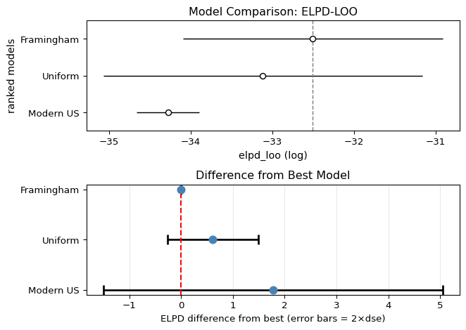
Key findings:
The Framingham prior performs best (rank 0) – unsurprisingly, since it matches this specific population. This validates that our prior specification was accurate.
The uniform (uninformative) prior is not significantly different from Framingham. This demonstrates Bayesian robustness: when you’re uncertain about the prior, using a weakly informative prior can be a safe choice that lets the data speak for itself.
Even the modern US prior is not significantly worse: While it ranks worst (as expected, since it assumes healthier 2015-2018 cholesterol levels than this 1990s cohort), the difference is not statistically significant with only 30 observations. We’d need more data to definitively reject it.
This example illustrates that Bayesian inference is robust to reasonable prior uncertainty. With limited data (n=30), even a somewhat mismatched prior (modern US for 1990s data) doesn’t cause dramatic predictive failures - though the ranking correctly identifies it as least compatible with the observed data.
Model Comparison in Stan (Optional)
Stan users can perform the same LOO-based model comparison. First, add a generated quantities block to compute log likelihoods:
generated quantities {
vector[n] log_lik;
for (i in 1:n) {
log_lik[i] = categorical_lpmf(x[i] | p);
}
}Then in R, use the loo package:
library(loo)
# Extract log-likelihood for each model
log_lik_1 <- extract_log_lik(fit1, merge_chains = FALSE)
log_lik_2 <- extract_log_lik(fit2, merge_chains = FALSE)
# Compute LOO
loo_1 <- loo(log_lik_1)
loo_2 <- loo(log_lik_2)
# Compare models
loo_compare(loo_1, loo_2)The interpretation is identical to PyMC: check if ELPD differences exceed 2×SE for significance. You can compare models with different priors this way to see which are compatible with your data.
Advanced Topic: Hierarchical Models
While beyond this chapter’s scope, hierarchical models deserve mention as they’re ubiquitous in modern Bayesian practice. These models have parameters that themselves follow probability distributions with hyperparameters:
\begin{aligned} y_i &\sim f(y_i \mid \theta_i) \\ \theta_i &\sim g(\theta_i \mid \phi) \\ \phi &\sim h(\phi) \end{aligned}
This creates “partial pooling” – groups share information through the common hyperparameters \phi, but maintain their own parameters \theta_i. Examples include:
- Clinical trials with patient-specific effects
- Educational assessments across schools
- Time series with varying parameters
For comprehensive treatment, see Gelman et al.’s Bayesian Data Analysis or the Stan manual’s case studies.
10.7 Chapter Summary and Connections
10.7.1 Key Concepts Review
MCMC and Convergence:
- Posterior sampling: Generate samples from the posterior rather than computing it analytically
- Convergence diagnostics: \hat{R} \leq 1.01, ESS > 400, visual “fuzzy caterpillar” trace plots
- Multiple chains: 4 chains provide parallelization and convergence verification
- NUTS algorithm: Modern sampler that adapts step size and trajectory length automatically
Probabilistic Programming with PyMC:
- Model specification:
with pm.Model()context + sampling notation matching math - Prior predictive checks: Verify priors generate reasonable data before fitting
- Automatic differentiation: System handles gradients, tuning, diagnostics
- Key argument:
idata_kwargs={"log_likelihood": True}for model comparison
Models We Implemented:
- Normal-Normal: Known \sigma, estimate \mu with real cholesterol data
- Dirichlet-Categorical: Medical categories (Desirable/Borderline/High cholesterol)
- Prior comparison: Demonstrated robustness across different priors (uniform ≈ Framingham ≈ modern US with n=30)
Model Comparison:
- \mathcal{M}-closed: Bayes factors assume one model is true (prior-sensitive)
- \mathcal{M}-open: ELPD-LOO measures predictive accuracy (more robust)
- Interpretation: |elpd_diff| > 2×dse indicates meaningful difference
10.7.2 The Big Picture
This chapter revealed three fundamental insights:
1. Samples Are Enough: We don’t need closed-form posteriors. MCMC samples let us compute any quantity of interest – means, credible intervals, posterior predictive distributions. This liberates us from conjugacy constraints.
2. Automation Enables Exploration: Probabilistic programming handles the computational heavy lifting (gradients, tuning, diagnostics), letting us focus on modeling choices rather than numerical methods. The barrier to trying different models has never been lower.
3. The Standard Workflow Works: Prior predictive → Fit → Diagnose → Posterior analysis → Model comparison. This systematic approach scales from toy problems to production models with hundreds of parameters. We demonstrated it on real medical data, showing how practical considerations (like clinical thresholds) drive modeling choices.
10.7.3 Common Pitfalls to Avoid
- Ignoring convergence warnings: Never proceed with \hat{R} > 1.01 or low ESS – fix sampling issues first.
- Misinterpreting ELPD-LOO: Higher ELPD means better predictions, not that the model is “true.”
- Discarding uncertainty: Report credible intervals, not just posterior means.
- Complexity before comprehension: Master simple models before attempting hierarchical structures.
10.7.4 Chapter Connections
Previous (Chapters 8-9):
- Chapter 8 established Bayesian theory (priors, posteriors, conjugacy) – this chapter showed how to compute posteriors when conjugacy fails, using MCMC sampling instead of closed forms.
- Chapter 9’s regression models become fully Bayesian here – we can put priors on regression coefficients, handle uncertainty in all parameters, and use regularizing priors.
- Both chapters relied on analytical or optimization methods – here we use sampling, which scales to arbitrarily complex models.
This Chapter: Brought Bayesian inference to life through probabilistic programming with PyMC. We learned to specify models in code, diagnose MCMC convergence (\hat{R}, ESS, trace plots), handle discrete data (Dirichlet-Categorical), and compare models using predictive accuracy (ELPD-LOO). Real Framingham Heart Study data grounded these concepts in medical decision-making contexts.
Next (Chapters 11-12):
- Chapter 11 (Causal Inference) will explore DAGs, do-operations, and counterfactuals to distinguish correlation from causation – while not explicitly Bayesian, these concepts combine naturally with the uncertainty quantification we’ve learned
- Chapter 12 (Missing Data) will address survivorship bias and imputation methods – the multiple imputation approach shares philosophical similarities with our posterior sampling
10.7.5 Self-Test Problems
Interpreting Convergence Diagnostics: You run a model and see:
mean sd hdi_3% hdi_97% r_hat ess_bulk theta 5.23 8.91 -12.3 22.7 1.43 47What’s wrong and how would you fix it?
Solution Hint\hat{R} = 1.43 >> 1.01 means chains haven’t converged. ESS = 47 << 400 means too few effective samples. Try: longer chains (
tune=2000), highertarget_accept(0.95), or better priors to avoid flat regions.Prior vs Data Influence: Your prior is \mu \sim \text{Normal}(210, 40) for cholesterol. You observe \bar{x} = 230 from n=30 samples with known \sigma=35. Will the posterior mean be closer to 210 or 230? Why?
Solution HintCompare precisions: prior precision \tau_0^{-2} = 1/40^2 \approx 0.000625, data precision n/\sigma^2 = 30/35^2 \approx 0.0245. Since data precision >> prior precision, the posterior will be pulled much closer to \bar{x} = 230.
Dirichlet-Categorical Conjugacy: You have a Dirichlet(1, 1, 1) prior for three categories. You observe counts (10, 15, 5). What’s the posterior distribution?
Solution HintDirichlet-Categorical conjugacy means you just add the counts to the prior parameters: posterior is Dirichlet(1+10, 1+15, 1+5) = Dirichlet(11, 16, 6). The posterior mean for category k is \alpha_k / \sum \alpha_i = 11/33, 16/33, 6/33.
Interpreting ELPD-LOO:
az.compare()shows Model A vs Model B has elpd_diff = -3.5 with dse = 1.8. Is the difference meaningful?Solution HintThe difference is 3.5 in favor of Model A, with dse (standard error of the difference) = 1.8. Since |3.5| < 2×1.8 = 3.6, the difference is not statistically significant. The models perform similarly; neither is clearly better. Note: Use
dse(difference SE), notse(individual model SE)!
10.7.6 Python and R Reference
Model Building:
import pymc as pm
import arviz as az
import numpy as np
# Basic model structure
with pm.Model() as model:
# Priors
theta = pm.Normal("theta", mu=0, sigma=1)
sigma = pm.HalfNormal("sigma", sigma=1)
# Likelihood
y = pm.Normal("y", mu=theta, sigma=sigma, observed=data)Sampling and Diagnostics:
# Sample with convergence diagnostics
with model:
# Prior predictive check
prior_pred = pm.sample_prior_predictive(samples=1000)
# Posterior sampling
idata = pm.sample(
draws=1000, # Post-warmup samples per chain
tune=1000, # Warmup samples per chain
chains=4, # Number of chains
target_accept=0.9, # For difficult geometries
random_seed=42, # Reproducibility
idata_kwargs={"log_likelihood": True} # For model comparison
)
# Posterior predictive check
post_pred = pm.sample_posterior_predictive(idata)
# Convergence diagnostics
print(az.summary(idata)) # Shows r_hat, ESS
az.plot_trace(idata) # Visual convergence check
az.plot_energy(idata) # NUTS energy diagnostic
# Check for divergences
divergences = idata.sample_stats["diverging"].sum().item()
print(f"Number of divergences: {divergences}")Common Distributions:
# Continuous
pm.Normal("x", mu=0, sigma=1)
pm.HalfNormal("x", sigma=1) # x > 0
pm.Exponential("x", lam=1) # x > 0
pm.Beta("x", alpha=1, beta=1) # 0 < x < 1
pm.LogNormal("x", mu=0, sigma=1) # x > 0
# Discrete
pm.Bernoulli("x", p=0.5)
pm.Binomial("x", n=10, p=0.5)
pm.Poisson("x", mu=5)
pm.Categorical("x", p=[0.2, 0.3, 0.5])
pm.NegativeBinomial("x", mu=5, alpha=2)
# Multivariate
pm.Dirichlet("x", a=np.ones(3)) # Probability vector
pm.MvNormal("x", mu=np.zeros(2), cov=np.eye(2))Model Comparison:
# Compute LOO for each model
loo1 = az.loo(idata1)
loo2 = az.loo(idata2)
# Compare models
comp = az.compare({"Model1": idata1, "Model2": idata2})
print(comp)
# Plot comparison
az.plot_compare(comp)For readers familiar with Stan, here are equivalent patterns:
Model Structure:
data {
int<lower=0> n;
real y[n];
}
parameters {
real theta;
real<lower=0> sigma;
}
model {
// Priors
theta ~ normal(0, 1);
sigma ~ normal(0, 1); // Truncated at 0
// Likelihood
y ~ normal(theta, sigma);
}
generated quantities {
// For LOO
vector[n] log_lik;
for (i in 1:n) {
log_lik[i] = normal_lpdf(y[i] | theta, sigma);
}
}Execution in R:
library(rstan)
fit <- stan(file="model.stan",
data=list(n=length(y), y=y),
chains=4, iter=2000)
# Diagnostics
print(fit) # Shows Rhat
traceplot(fit, inc_warmup=TRUE)
# LOO comparison
library(loo)
log_lik <- extract_log_lik(fit)
loo_result <- loo(log_lik)10.7.7 Connections to Source Material
This chapter synthesized material from multiple sources. From Wasserman’s All of Statistics, we drew on Section 11.8 covering Bayesian testing and model comparison foundations. Modern sources provided the practical implementation details: PyMC documentation and examples supplied implementation patterns and best practices, Vehtari et al. (2021) informed our updated \hat{R} thresholds and convergence diagnostics, and ArviZ documentation guided our visualization and diagnostic tools.
10.7.8 Further Materials
- Foundational Text: Gelman et al., Bayesian Data Analysis (3rd ed.) – the definitive reference for applied Bayesian methods
- Practical Workflow: Gelman et al. (2020) – comprehensive guide to the iterative process of model building, checking, and improvement
- PyMC Documentation: docs.pymc.io – comprehensive examples and API reference
- MCMC Theory: Betancourt (2017), “A Conceptual Introduction to Hamiltonian Monte Carlo” – understanding NUTS/HMC mechanics
Remember: Practical Bayesian inference combines art and science. You specify models using domain knowledge, then let probabilistic programming handle the computational heavy lifting. The workflow we demonstrated – model specification → fit → diagnose → analyze → compare – scales from toy problems to production systems. Master the fundamentals before attempting complexity!
Unfortunately, the 538 website closed in March 2025.↩︎
In practice, as we will see in this chapter, some work and expertise is still needed.↩︎
There are complex models for which computing the likelihood itself can be difficult, but for most models we consider this is not an issue.↩︎
The exact way in which this is achieved depends on the specific choice of MCMC algorithm.↩︎
Adjusting sampling settings throughout this phase breaks the Markov property: to collect valid samples, adaptation must be stopped before collecting valid draws, and we throw away the burn-in samples.↩︎
The ESS > 400 guideline is a practical recommendation from the probabilistic programming community (Stan Development Team 2024; Gelman et al. 2013) rather than a hard theoretical requirement. For posterior means, ESS of 100-200 might suffice, while extreme tail probabilities (e.g., 99th percentiles) may require ESS > 1000. The 400 threshold represents a reasonable default for common use cases like computing 95% credible intervals.↩︎